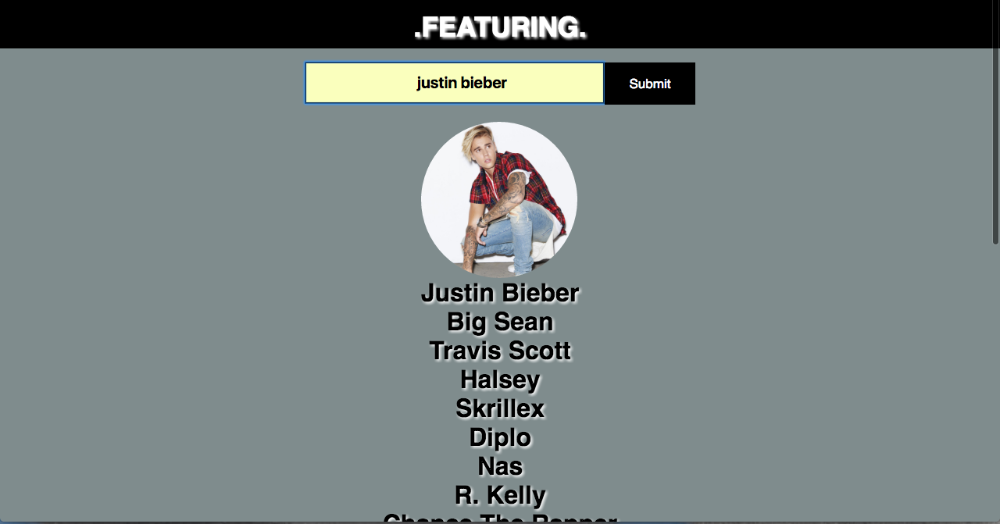

Alittle bit more about myself
I’m a full stack developer with skills in HTML, CSS, Javascript, jQuery, Ruby, and React. I have a passion for food, athletics, music and web development. I recently attended General Assembly’s Web Development Immersive program to perfect my skills in web development. I have experience in the food industry and have worked in restaurants for much of my life. I have also been involved in music, by playing in bands and building recording studios for past employers. Having held multiple creative positions in the past, I am now looking for new ways to combine my love of software engineering with my other passions.
Some Projects I Have Worked On

Featuring allows a user to search a musical artist and view a list of collaboraters they have worked with.